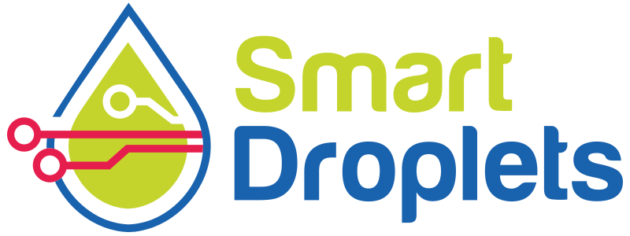
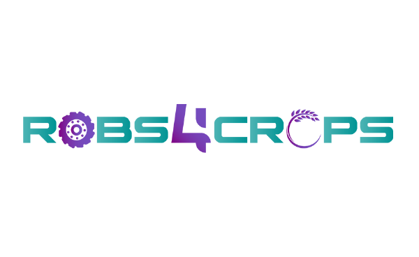

I am a Robotics Researcher at Eurecat Technology Centre and a PhD candidate at Universidad Pablo de Olavide. My work focuses on bridging high-level AI reasoning with robust field robotics. I specialize in full-stack autonomy, from navigation core development to real-time semantic perception in unstructured and dynamic environments.
Reliable navigation in unpredictable and extreme environments.
Deployment of large-scale autonomous platforms in demanding field conditions. I develop navigation frameworks that integrate intelligent path planning and dynamic obstacle avoidance to ensure operational safety across unstructured terrains.
Building resilient systems capable of handling complex indoor-outdoor transitions and high-reliability operations where traditional autonomy often fails.
Robust localization in unstructured environments.
Multi-stage sensor localization systems that combine data from 3D LiDAR, Radar, GNSS, and IMUs. Centimeter-level accuracy, even in challenging GNSS-denied unstructured areas.
My work focuses on the integration of advanced perception pipelines that allow robots to navigate complex environments by understanding their context. By deploying Deep Learning models directly on edge hardware, I enable real-time semantic interpretation, bridging the gap between raw sensor data and high-level autonomous decision-making.
Implementation of real-time 3D tracking for people and obstacles in shared workspaces. This perception layer provides a critical safety buffer, processing LiDAR pointclouds on-board to ensure proactive obstacle avoidance and reliable human-robot interaction.
Edge Inference 3D TrackingExtracting geometric and semantic patterns from unstructured surroundings to generate autonomous paths. As shown in the crop-row extraction case, this allows for fluid, reactive movement in dynamic environments where static global maps are non-existent or insufficient.
Behavior Trees Semantic NavVersatile autonomy for complex facilities.
Exploring the capabilities of quadrupedal platforms for autonomous inspection and semantic mapping. My work involves merging multi-modal data from 3D LiDAR, thermal cameras, and RGB sensors to provide robots with a comprehensive understanding of their environment.
This fusion of sensors allows for intelligent navigation and asset identification in challenging industrial spaces, reaching areas that are often inaccessible to traditional wheeled robots.
Technical leadership and development in large-scale European and National R&D initiatives.

Horizon Europe | 2022 - 2025
Lead Developer and Work Package leader for the autonomous spraying system, bridging physical robots with high-fidelity Digital Twin simulations (Sim-to-Real) including multi-sensor scene understanding and traversability analysis.
Digital Twin Smart FarmingHorizon Europe | 2022 - 2026
Engineering AI perception modules for pedestrian detection and semantic mapping for intelligent decision-making in last-mile autonomous delivery urban hubs.
Urban Logistics Edge AI
Horizon 2020 | 2021 - 2024
Developed reactive navigation stacks for retrofitted autonomous tractors, enabling row-following via semantic segmentation.
Tractor Retrofitting Reactive NavigationNational Grant | 2021 - 2024
Architected fleet management server for dynamic task allocation and traffic orchestration of multi-robot agricultural systems.
Fleet Management Multi-AgentIndustrial Logistics | 2024 - 2027
Designing a 3D LiDAR perception pipeline for warehouse optimization, including real-time object recognition and pose estimation.
Intralogistics Deep Learning"Contextual Autonomous Navigation via Vision-Language Models (VLMs)"
My doctoral research explores the frontier of Mapless Navigation by leveraging Foundational Models (VLMs) to provide robots with zero-shot semantic reasoning capabilities. Unlike traditional SLAM-based methods, this approach interprets the scene's context to discern strategic routes directly from visual and natural language instructions.
A core innovation of my work is Energy-Aware Planning. By identifying terrain types semantically (e.g., distinguishing between mud, sand, or asphalt), the system estimates rolling resistance in real-time. This allows for the optimization of trajectories aimed at minimizing power consumption, a vital step toward truly efficient and long-range field robotics.
P. Reverté, M. S. Moura, D. Serrano, and C. Rizzo, "RT3E-Agro: Real-Time Terrain Traversability Estimation for Mobile Robots in Agriculture", in 2025 8th Iberian Robotics Conference (ROBOT), Porto, Portugal, 2025.
In pressJ. F. Rascón, P. Reverté, X. Ruiz, M. S. Moura, D. Serrano, and C. Rizzo, "Leveraging Behavior Trees for Hybrid Autonomous Navigation in Seasonal Agricultural Environments", in 2024 7th Iberian Robotics Conference (ROBOT), Madrid, Spain, 2024, pp. 1-7.
DOI: 10.1109/ROBOT61475.2024.10797423UPC - Barcelona Tech | 2019 - 2021
Specialized in Advanced Control, Mobile Robotics, and Multi-modal Perception.
UPC - EEBE | 2015 - 2019
Core foundation in Industrial Automation, Electronic Design, and Real-Time Computing. Deep focus on sensor instrumentation and hardware-software integration.